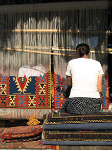

Upcoming Events
Members of Art Through The Loom participate in a number of events. The guild sponsored events include:
Meetings at least 4 times a year. Usually meeting occur in Abuquiu, NM or somewhere close by.
Taos Wool Festival. Every Year we have a booth at the Taos Wool Festival. The festival is one of the longest running wool festivals in the Country.
Participation in other shows. We group together and have booths in other art and fiber shows. This is a great way to sell your work with less overhead. Newsletters